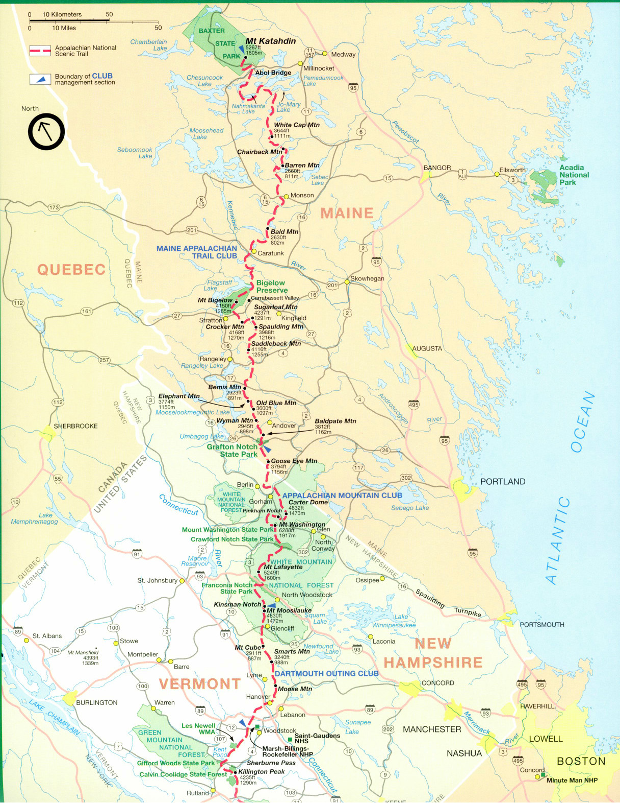
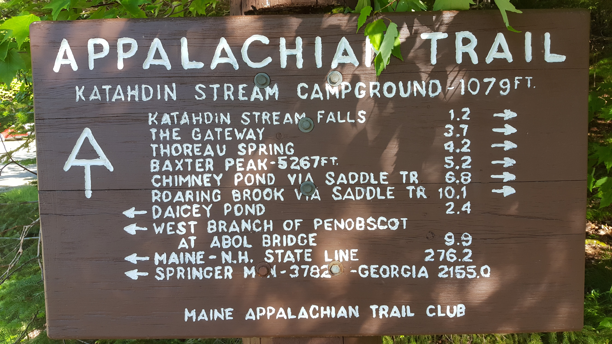

My travels between graduation and my first job
I was forunate enough to have about 7 months to travel. This is how I spent it.
The Appalachian Trail: 5 weeks
I hiked 380 miles from Mount Katahdin at the northernmost point of the trail
to Lincoln, New Hampshire. Right after the Whites.

I want to go back to finish it someday, hopefully in just a few sections.

Katahdin
We summitted in some gnarly weather. To be honest, we probably shouldn't have
been up there. The rocks were wet, the rain was coming in sideways, and the
wind was gusting so strongly it nearly knocked us over multiple times. I have
very few pictures from the hike up because I was focused on not dying,
something I figured my phone could distract me from. But we did it! and we all
lived to tell the tale.
The Hundred Mile Wilderness
Monson, Maine. Heaven on earth
The Hiker Hut
The Mahoosucks (sp?)
The Whites
The beauty of living in the woods
The rewards of the grueling walk
It's the simple things. The AT teaches you how valuable the most basic things
are. Food, Warmth, Shelter. I cannot put into words the sheer joy one single
hot meal of pho was for me. That pho got me through the last two grueling
uphill miles in the rain. I knew, at the top of this hill, was a shelter
and I knew that in my bag was a dehydrated pho soup that would taste utterly
amazing. And it did! Not because the food was particularly tasty, but rather
it was exactly what my body needed.
The AT teaches you what you really need. It strips
you of anything you only want, forcing you to learn what you really need.
Anything you want is too heavy. Don't bring it.
Overall, I thoroughly enjoyed hiking on the AT.
I started in the middle of the southbound "bubble", when most of the southbound
thru-hikers started. Ryan, my friend since we were small children,
joined me for the first hundred miles of the trail.
The community
Pacific Northwest: 2 weeks
Europe: 3 months
India: 1 day
Japan: 2.5 weeks
Colorado: 1 or 2 weeks?
Columbus: 1 week
Cape Canaveral: ? weeks